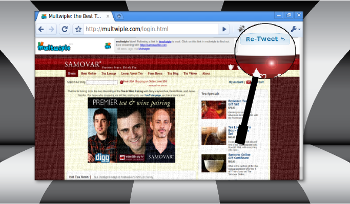
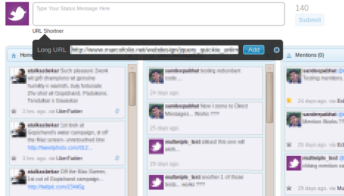
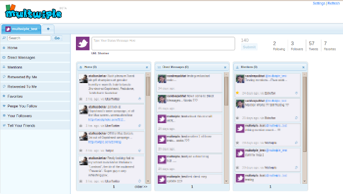
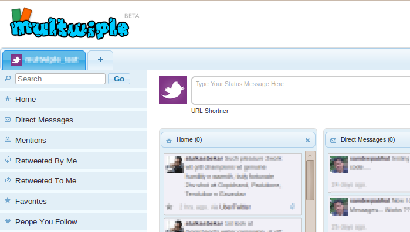
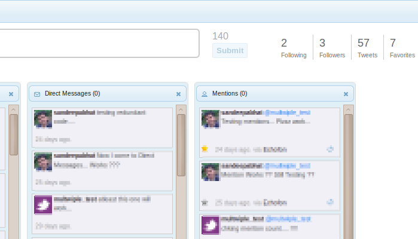

-
Manage Multiple Twitter accounts
No more sign-out and sign-ins to tweet via multiple twitter accounts.
Easily manage multiple twitter accounts.
-

Take your Tweet with you!
You will never forget the source which led you to a particular web page.
Multwiple takes the tweet along when you click on a link ...
-

URL Shortener
Shorten long URLs at will. Easy to use interface.
Simply click on the URL shortner link...
-

Easy to use interface.
Simple and easy to use interface. Get your regular updates, direct messages,
mentions, mark favorites, retweets, etc.
-

Add more than one twitter accounts.
Adding a new twitter account into multwiple couldn't have been easier!
Just click on the [+] tab button...
-
Search for tweets
<keyword>:<multwiple> will show you all tweets containing the keyword which were tweeted via multwiple.
Not only search tweets for a particular keyword, but look for its source as well!
-

Your Tweet Stats.
See ho many peopl you follow? How many people follow you?
Know how many times you tweeted?...
|
|

 Follow us on Twitter.
Follow us on Twitter.
 Become a fan on Facebook.
Become a fan on Facebook.
 Check out our Blog
Check out our Blog